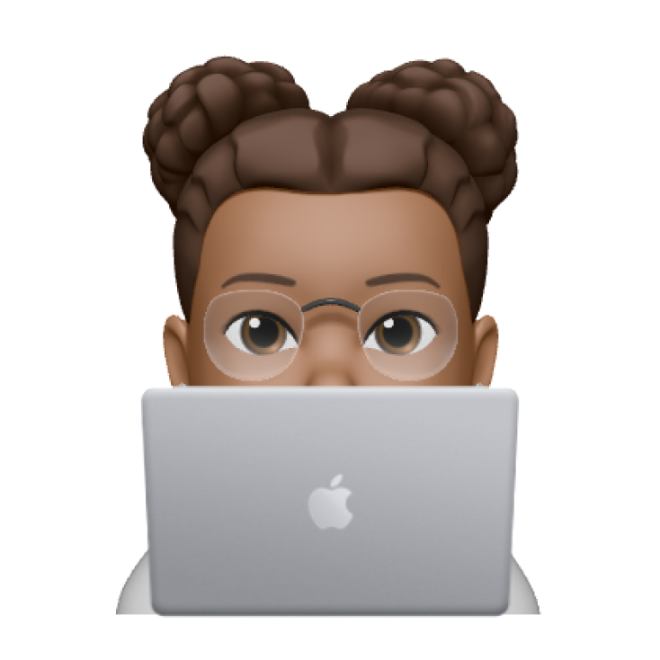
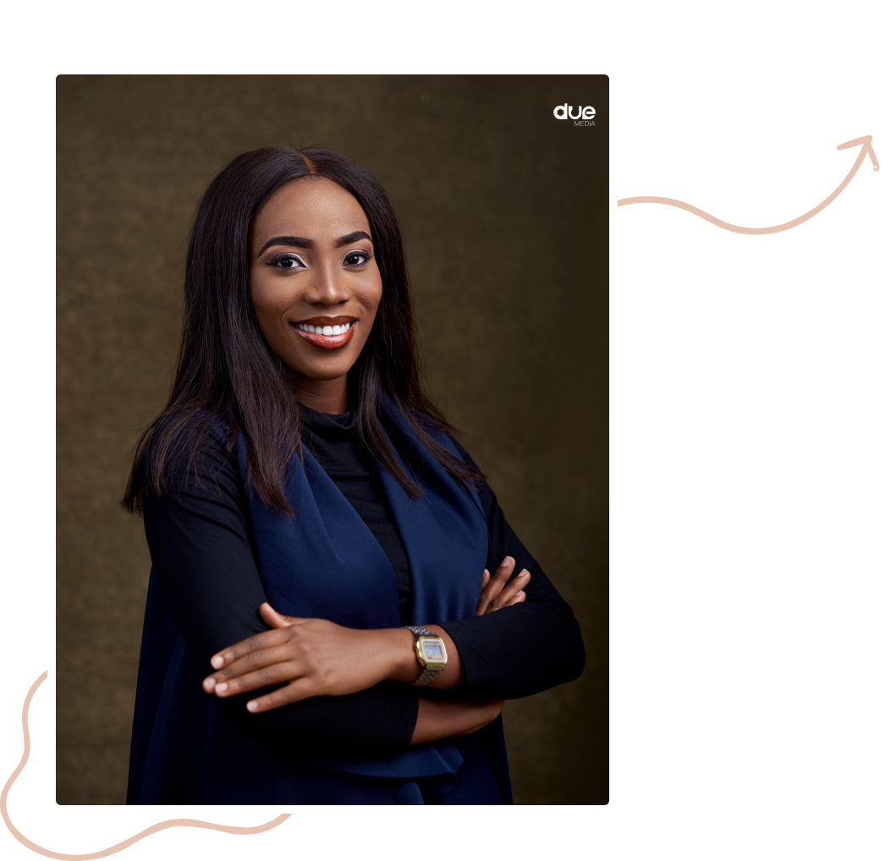

Hi👋


I'm Grace Akpoiroro, a UI/UX designer born in Nigeria and
I'm Grace Akpoiroro, a UI/UX designer born in Nigeria and
currently living in Abuja.
I've been designing since August 2020. I've created
countless websites, mobile apps with a primary focus on
simplicity, usability and accessibility. I have top skills in
using design softwares like Figma and Photoshop; with
prototype tools like Framer and Protopie. I also use lucid and
miro for user flows and journey maps.
I am also a freelancer and I have worked with some amazing
clients, helping them to solve their business proiblems using
design.
Research
I conduct online surveys and
interviews to understand user
needs and how users think and
feel.
.png)
02
Define & Ideate
In define stage. I outline the
problem statement focusing
on the end user. In Ideate
stage, I create sketches and lo-
fi wireframes.

03
Prototype
I convert the lo-fi wireframes
to high-fi prototypes that users
can interact with.

04
User Testing & Hand-Off
I carry out unmoderated user
testing with focus group and
iterate on the design. Finally, I
handoff to developers for
implementation.
.png)